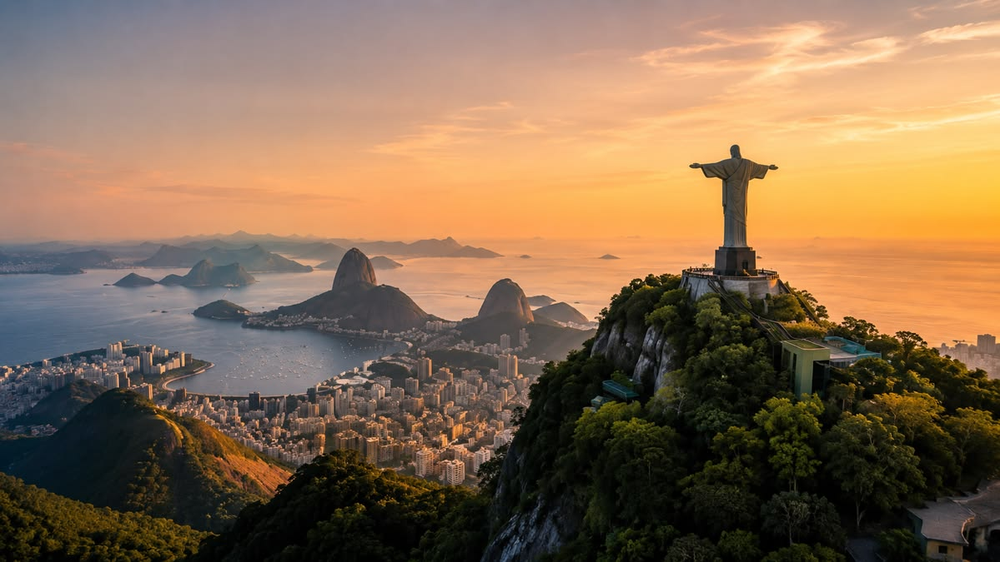
Бразилия
Страна самбы и футбола — от бескрайних джунглей Амазонии до пляжей Копакабаны и водопадов Игуасу, крупнейшее государство Южной Америки.
Бразилия занимает почти половину Южной Америки и делит границу почти со всеми её странами, кроме Чили и Эквадора. Здесь находится крупнейший тропический лес планеты, самые протяжённые пляжи континента и города, где карнавал длится неделю каждый год. Откройте Бразилию и узнайте, чем страна с пятикратными чемпионами мира по футболу продолжает покорять весь мир своей энергией.
Бразилия на карте мира
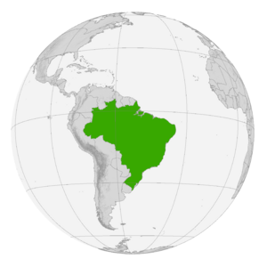
Бразилия — Южная Америка, крупнейшая страна континента
Лёгкие планеты: около 60% территории бассейна Амазонки — крупнейшего влажного тропического леса Земли — находится в границах Бразилии, а сама река несёт больше воды, чем следующие семь по полноводности рек мира вместе взятые.
С кем граничит Бразилия
У Бразилии больше соседей, чем у любой другой страны Южной Америки — только Чили и Эквадор с ней не граничат:
Побережье Атлантики
Наведи курсор на карточку, чтобы узнать больше о каждом участке побережья:
Побережье Юго-Востока
Рио-де-Жанейро, Копакабана и Ипанема — самое узнаваемое побережье страны
Побережье Северо-Востока
Белоснежные пляжи Баии и Форталезы с тёплой водой круглый год
Устье Амазонки
Крупнейший речной эстуарий мира, где пресная вода встречается с океаном
Южное побережье
Санта-Катарина — климат прохладнее, волны выше, любимое место сёрферов
Общие сведения
Площадь
8 515 767 км² (5-я в мире)
% водной поверхности
0,65 %
Население
~216 000 000 чел. (7-е)
Плотность
25 чел./км²
Столица
Бразилиа
Форма правления
Федеративная президентская республика
Официальный язык
Португальский
Президент
Избирается на 4 года
Названия жителей
Бразильцы
Валовой Внутренний Продукт
На душу населения
~10 000 долл.
Итого
~2,2 трлн
Валюта
бразильский реал (BRL)
Телефонный код
+55
Часовой пояс
от UTC-5 до UTC-2
Интерактивная карта штатов
Наведи курсор на плитку — появится столица штата и любопытный факт о нём. Кнопки ниже подсвечивают целый макрорегион страны. На карте отмечены все 26 штатов и федеральный округ.
Наведите курсор на любую плитку карты — здесь появится столица штата и интересный факт о нём.
Один день в Бразилии
Представьте, что сегодня вы проснулись где-то в Бразилии. Как может выглядеть ваш идеальный день?

Доброе утро, Рио-де-Жанейро
Начните день с чашки крепкого кафезиньо и тёплого пан-де-кежо — воздушного сырного хлебца, без которого не обходится ни один бразильский завтрак.
📍 Рио-де-Жанейро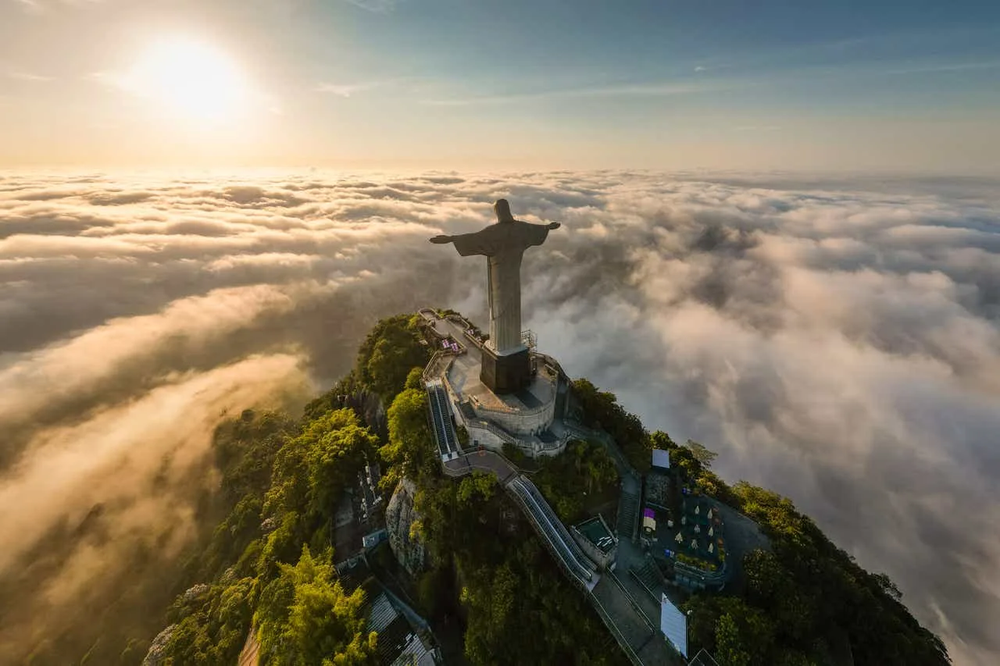
Взгляд с горы Корковаду
Поднимитесь к статуе Христа-Искупителя на вершине горы Корковаду — отсюда открывается панорама на весь Рио и залив Гуанабара.
📍 Корковаду, Рио-де-Жанейро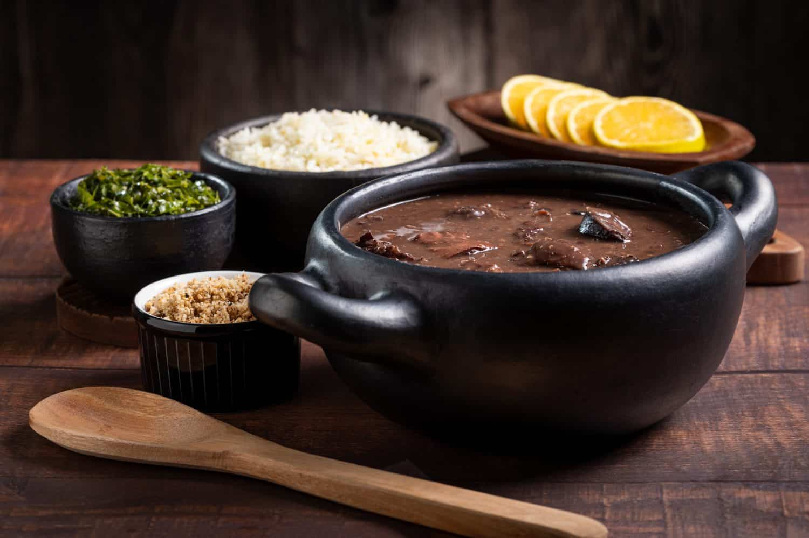
Воскресный обед
Отведайте фейжоаду — густое рагу из чёрной фасоли со свининой, которое традиционно готовят и подают большой компанией по субботам и воскресеньям.
🍴 Традиционная кухня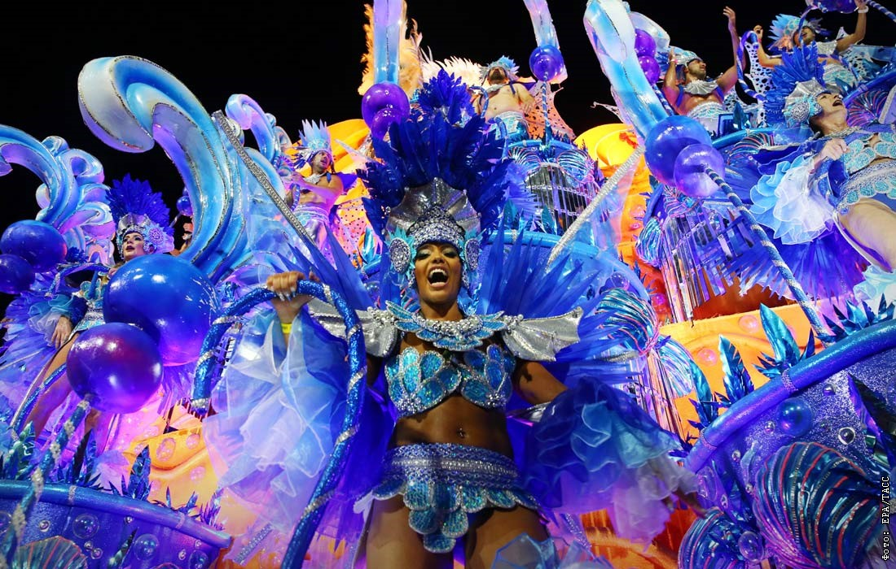
Ночь самбы
Завершите день в квартале Лапа, где под открытым небом гремят барабаны самбы, а танцы продолжаются до самого рассвета.
📍 Лапа, Рио-де-ЖанейроСамые красивые места
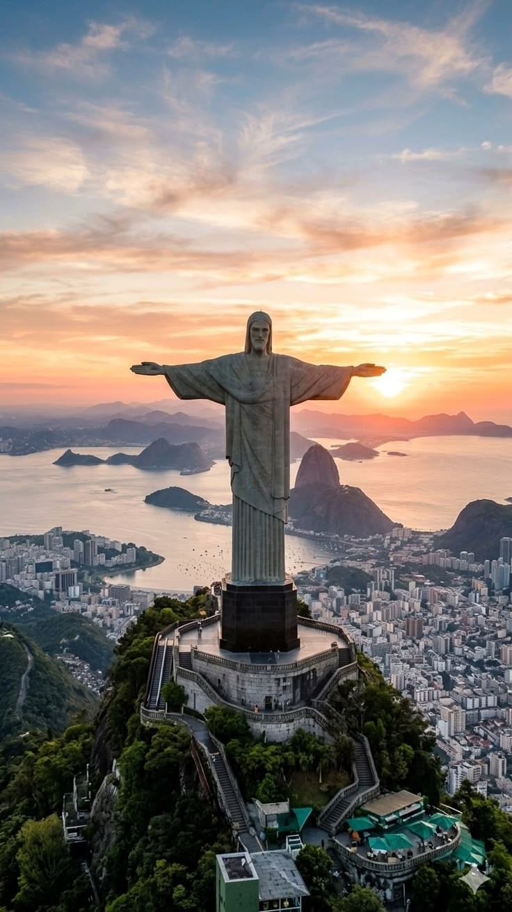
Христос-Искупитель38-метровая статуя на вершине горы Корковаду — одно из новых семи чудес света и главный символ Рио.
 Водопады Игуасу
Водопады Игуасу
Система из 275 водопадов на границе с Аргентиной — одно из природных чудес света.
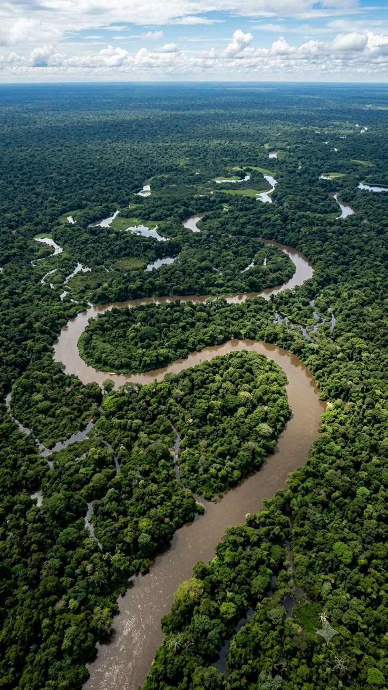
АмазонияКрупнейший тропический лес планеты, дом для десятой части всех известных видов на Земле.
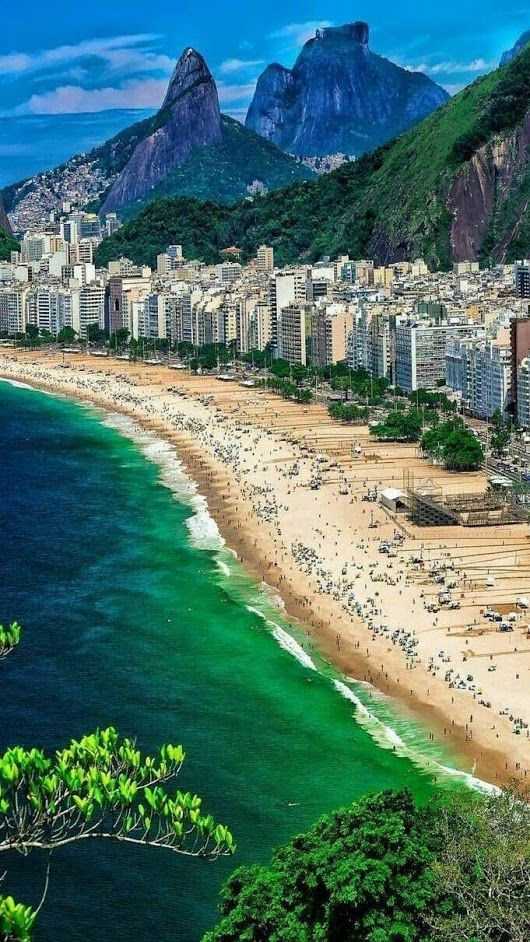
КопакабанаОдин из самых знаменитых городских пляжей мира протяжённостью почти 4 км.
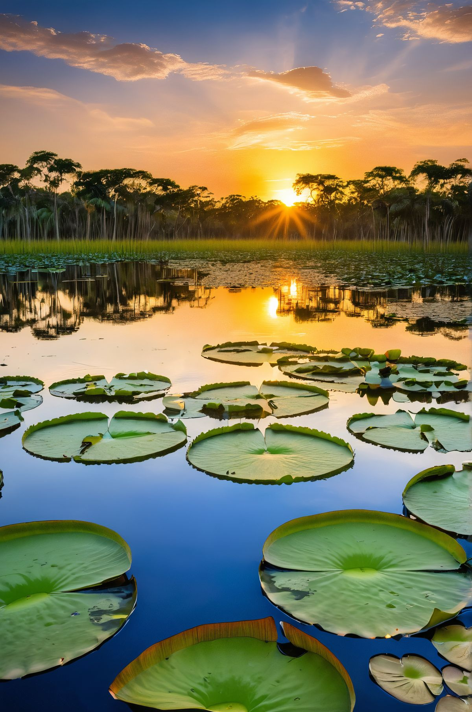
ПантаналКрупнейшая заболоченная территория планеты с одной из самых высоких концентраций дикой природы в мире.
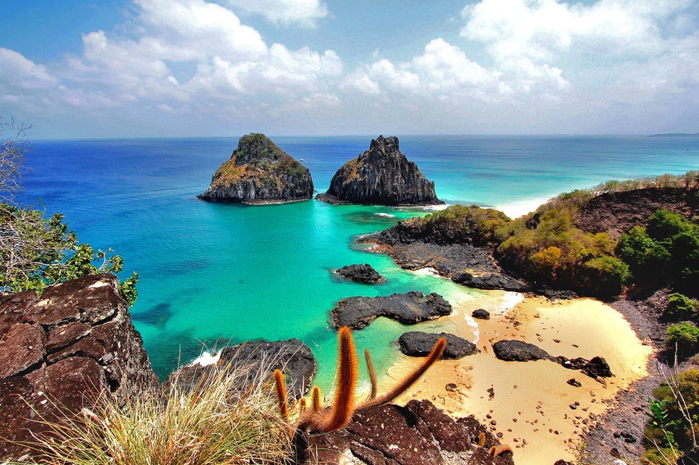
Фернанду-ди-НороньяВулканический архипелаг с кристально чистой водой, одно из лучших мест мира для дайвинга.
Национальная кухня
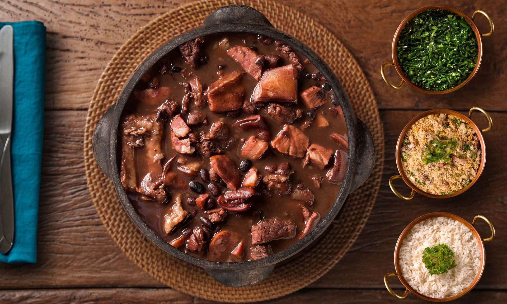
Фейжоада
Густое рагу из чёрной фасоли со свининой — национальное блюдо, которое подают с рисом, капустой, апельсинами и мукой фариньей. Традиционно готовится по выходным для большой компании.
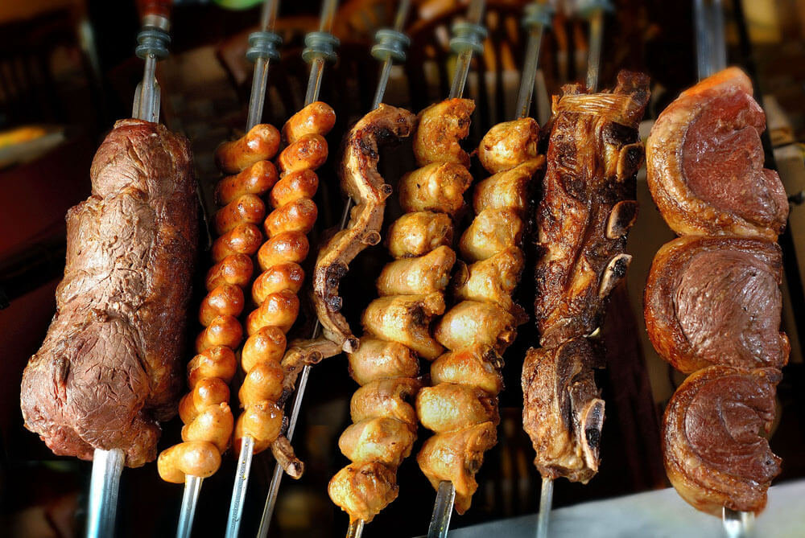
Чурраско
Мясо, жаренное на шампурах над открытым огнём — бразильское барбекю родом из южных штатов гаучо, сегодня подаётся в стейкхаусах-родизио по всему миру.
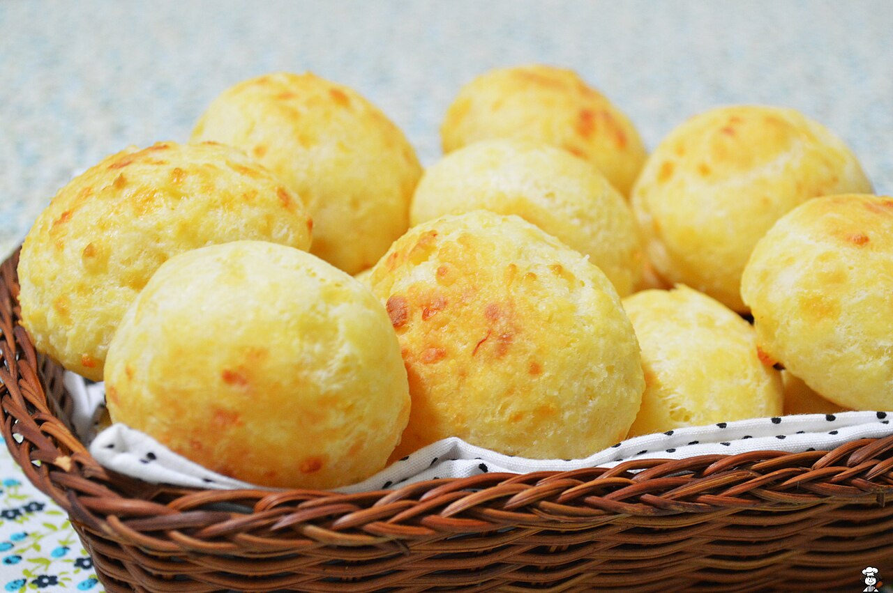
Пан-де-кежо
Маленькие сырные булочки из маниоковой муки — хрустящие снаружи и тягучие внутри, неизменный спутник бразильского завтрака и полдника.
Флаг и герб Бразилии
Символы, за которыми стоит своя история
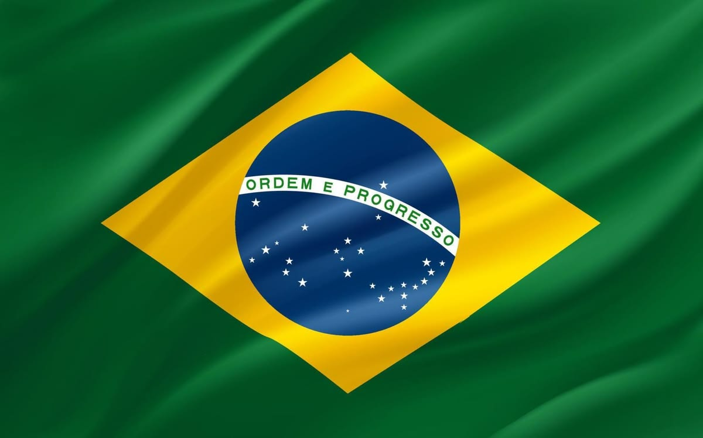
Зелёно-жёлтый флаг со звёздным небом над Рио в момент провозглашения Республики
Что означают цвета и элементы флага
Наведи курсор на каждую полосу, чтобы узнать её значение:
Зелёный
Традиционно связывают с лесами страны и императорской династией Браганса/p>
Жёлтый ромб
По одной из версий восходит к династии Габсбургов и символизирует золото и природные богатства
Синий глобус и звёзды
27 звёзд расположены точно так, как выглядело небо над Рио-де-Жанейро в ночь провозглашения Республики 15 ноября 1889 года
Краткая история флага
- 1822После провозглашения независимости принят флаг Империи с гербом в центре жёлтого ромба.
- 1889После падения монархии имперский герб заменяют синим глобусом со звёздами и девизом.
- 1960Число звёзд увеличивают до 22 по числу штатов на тот момент.
- 1992Принят действующий флаг с 27 звёздами — по числу нынешних штатов и федерального округа.
Герб Бразилии — что зашифровано в символах
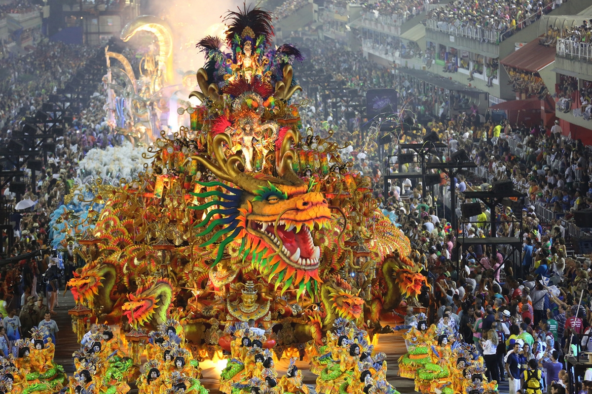
Карнавал в Рио — крупнейшее уличное празднество планеты, ежегодно собирающее миллионы человек на самбадроме.
Государственные праздники
Главный праздник страны — 7 сентября, День независимости. Отмечается в честь «Крика Ипиранги» 1822 года, когда принц-регент Педру провозгласил независимость Бразилии от Португалии. По всей стране проходят военные парады.
Новый год
Ano Novo — миллионы бразильцев встречают его в белом на пляжах Копакабаны
Карнавал
Carnaval — крупнейшее уличное празднество страны за 40 дней до Пасхи
День Тирадентиса
Tiradentes — в честь героя, казнённого в 1792 году за борьбу за независимость
День труда
Dia do Trabalho — государственный выходной по всей стране
День независимости
Independência do Brasil — главный государственный праздник страны
День Богоматери Апаресиды
Nossa Senhora Aparecida — день покровительницы Бразилии, совпадает с Днём детей
День провозглашения Республики
Proclamação da República — в честь падения монархии в 1889 году
Рождество
Natal — семейный праздник посреди южного лета